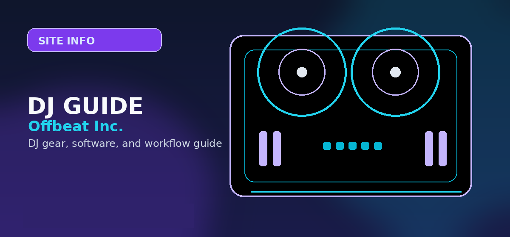

Site InfoPhoto: Unsplash
Page Not Found
404 — Page Not Found | Offbeat Inc. — Expert reviews, top picks and buying guides for 404.

Page Not Found
The page you requested is not available. Use the main navigation to return to current DJ gear, software, and setup guides.